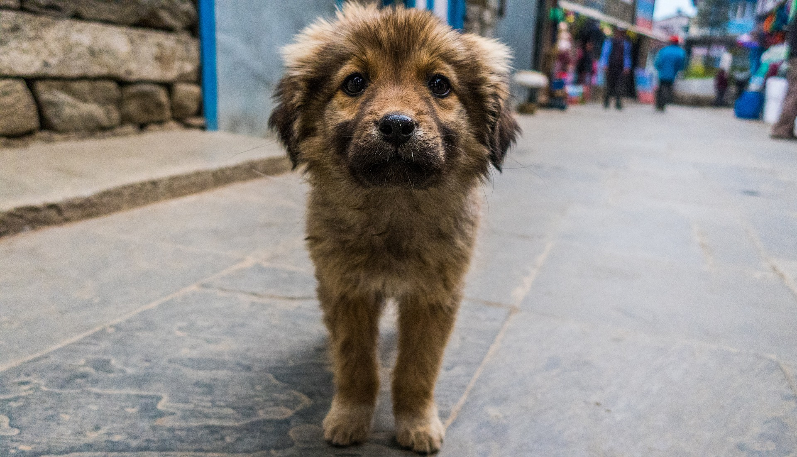
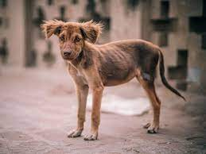
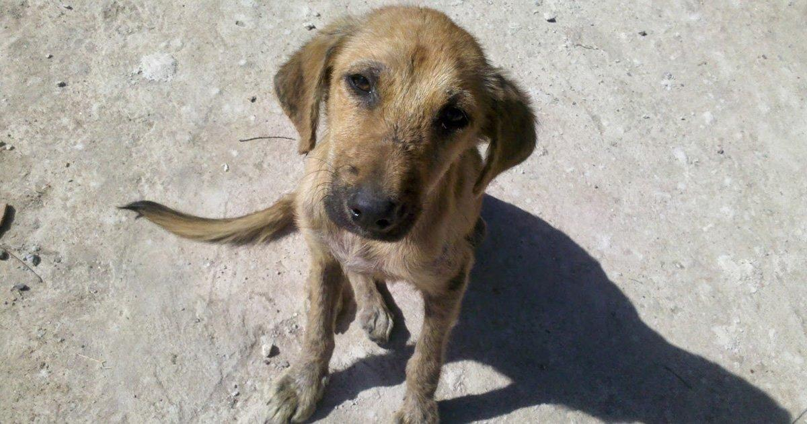
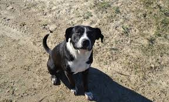
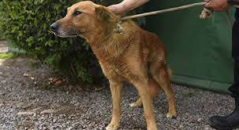

Ellos esperan por ti

Chapo
Este pequeñito de un año, fue encontrado vagando por las calles de concepcion.
Preguntar por el


Luchito
Perrito Travieso de un 3 años, rescatado de un hogar de ancianos que se incendio
Preguntar por el



Pandemia
Esta perrita de 7 años, fue refugiada en un hospital luego de fallecer su dueña.
Preguntar por el

Gaspar
Fue abandonado por su familia en el bosque, hoy recupera la sonrisa y espera un nuevo hogar.
Preguntar por el
Choquito
Este cachorro es uno de los mas tiernos y leales, sufrio de maltrato y fue rescatado ya tiene un añito.
Preguntar por el